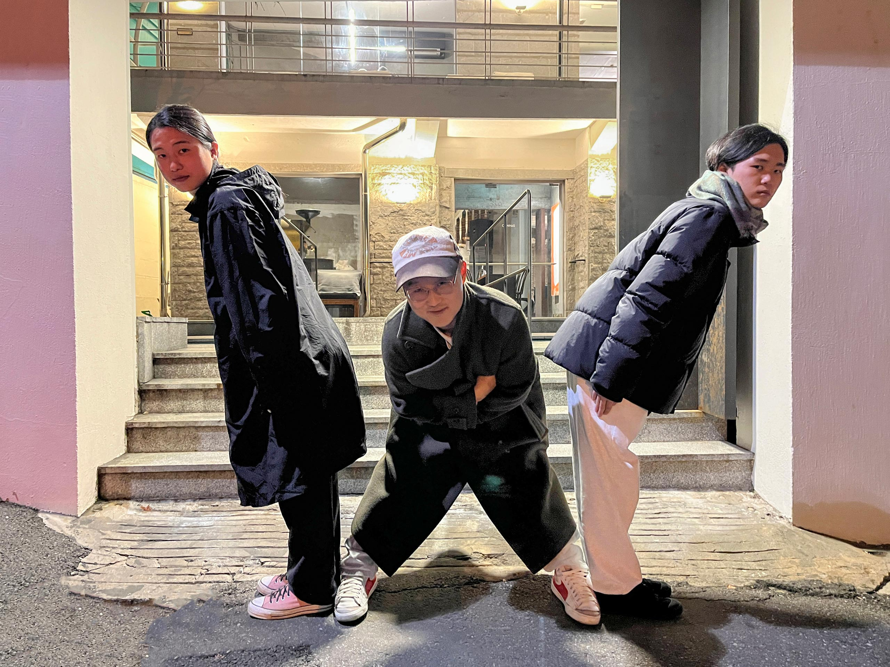

사전 질문
<
<하루에 하나>는 미술 전시를 본 뒤 그 전시에 대한 감상을 나누는 프로젝트입니다. 편지 형식의 전시 리뷰 ‘레터’에 이어 대화 형식의 전시 리뷰 ‘전시 보러 갈래?’를 발행하고 있어요.
좋아하는 문화예술계 종사자와 함께 전시를 보고 대화를 나누는 콘텐츠인 ‘전시 보러 갈래?’는 인터뷰와 사적 대화 그리고 전시 리뷰 사이에서 그 균형이 매번 다르게 잡혀가는데요. 이번 회차에는 전시 리뷰가 무척 적게 담겼답니다. 갈라 포라스-김에 대한 이야기가 궁금하신 분들은 구글에 ‘갈라 포라스-김'을 검색해 보아요. :)

파티원: 도현, 김형진, 재훈, 정아
김형진은 워크룸과 카우프만의 디자이너입니다. 그래픽 디자인 스튜디오이자 출판사인 워크룸을 공동으로 창립했고, 운영하고 있습니다.
도현은 시각디자인을 공부하며 책에 대한 애정을 키우던 때 워크룸을 처음 접했습니다. 최근에 도현은 전시와 같은 이벤트를 통해 본인의 커리어를 자축하는 듯한 디자이너들의 활동에 의문을 품고는 했는데요. 그와는 달리 자신의 작업을 설명할 때 거창한 의미를 부여하지 않고, 가능한 한 자신의 이름을 내세우지 않는 김형진 디자이너의 활동 방식에 호감을 갖게 되었습니다.
당시 옆자리에서 그 말을 듣고 있던 재훈은 일민미술관 토크 프로그램 〈비선형적 음악사〉에서 김형진 디자이너가 보여줬던 뛰어난 언변과 명료한 미의식을 떠올렸습니다. 추후에 그가 미술사를 전공했으며 아카이브 이미지에 관심 두고 있다는 정보를 접했고, 같이 《국보》를 보고 이야기 나누면 정말 재미있겠다고 생각했습니다.
이 여정에 동행하지 않겠냐는 제안에 정아는 흔쾌히 수락했습니다. 정아는 도현과 재훈의 이야기를 듣고, 두 사람의 시선이 김형진 디자이너가 작업을 대하는 태도에 가 있다는 사실을 넌지시 가리켰습니다.
1부
1. 스캔하는 사람, 김형진
2. 작가의 말
3. 미술 제도라는 생태계
- 김형진: 제도란 결국 학교와 매거진 그리고 뮤지엄, 이 안정적인 삼각축으로 이루어진 하나의 커다란 생태계에요. 그 생태계의 구성원이 각자 ‘자신의 할 일을 한다'라는 맥락에서 이 순환이 이루어지고 있는 거고요. 심지어 저는 제대로 써줄 비평가 한 명이 어떤 전시를 보고 글 하나를 완성했다면, 나머지 관객들은 그 전시에 굳이 방문하지 않아도 된다고 생각하거든요. 그렇지 않나요?
4. 참다운 직업인, 김형진
- 김형진: 저는 디자인계에 대한 사명감이 없어요. ‘이런 식으로 나아가면 디자인계는 곤란하다’라고 하는 식의 위기의식이 있거나 그렇지 않아요. 잘하는 디자이너를 열심히 질투하고 못하는 디자이너를 마음속에서 지우고, 그런 게 전부예요. 오랜 시간 사명감을 갖고 무언가를 위해 노력했는데 그 결과가 생각만큼 이루어지지 않았을 때 사람의 심성이 비틀어지거든요.
2부
5. 도파민 중독자, 김형진
- 김형진: 대신 제가 열심히 하는 게 딱 하나 있어요. 보는 일. 저는 보는 일을 심각하게 많이 하는 사람이거든요? 근데 이게 무슨 목적이 있어서가 아니고 그냥 제가 시각적인 자극이 주입이 되어야만 하는 사람이라서 그래요. 무언가를 보거나, 보면서 비웃거나 감탄할 때 너무 즐겁잖아요. 미술 작품도 그렇고, 드라마랑 영화도 그렇고, 공간 인테리어도 그렇죠. 이런 것들을 계속 보고 평가질하는 게 제 생활이에요.
6. 직업 활동에 따른 책임
- 김형진: 그저 성실한 직업인이더라도 경계해야할 점은 있어요. 이를테면 스스로 선택한 직업 윤리에 따라 일을 하다가 결과적으로 악이 행해졌을 때 ‘나는 나에게 주어진 상황에 맞춰 나의 일을 했을 뿐이다'라는 식으로 답변하는 경우가 그렇죠.
- 재훈: 듣다보니 여쭤보고 싶은 것이 떠올랐는데요. 혹시 2010년대 중반에 성폭력 피해 공론화로 인해 도미노 편집 동인의 활동이 중단됐을 때는 마음이 어떠셨나요?
7. 예쁜 것을 함께 예뻐하는 사이
8. 까마귀 혹은 도라에몽, 김형진
- 김형진: 오늘 전시 보러 가는 것도 저는 그냥 다른 사람들이 만든 이쁜 걸 보러 간다고 여기며 왔어요. 전시가 됐건, 컵이 됐건, 남이 만든 이쁜 것들이 세상에 넘치잖아요. 그렇게 이쁜 것과 반짝거리는 것들을 보면 열광하면서 긁어모으는 까마귀처럼 열심히 모으면서 살자, 그러고 있어요.
전시 보러 갈래? - 김형진과 함께 (1)
도현, 재훈, 정아
2024.02.28
전시 보러 갈래? - 김형진과 함께 (2)
도현, 재훈, 정아
2024.02.28